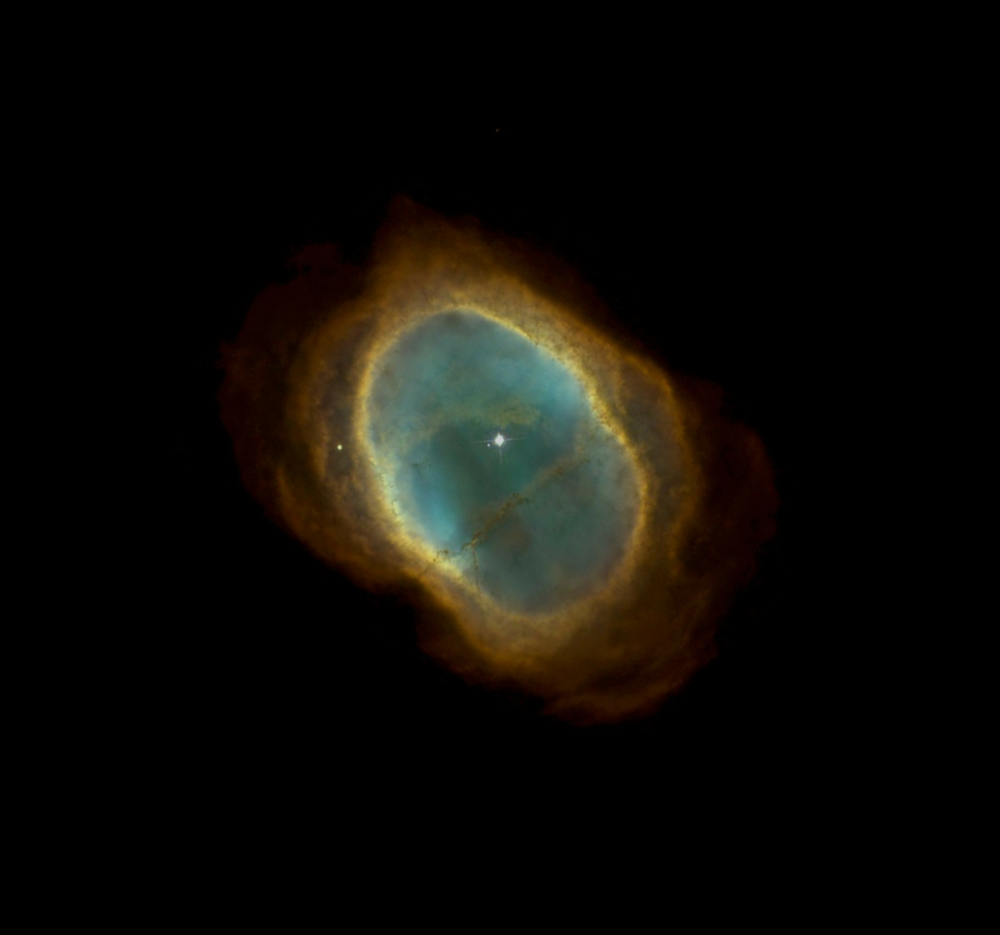

Imageslider
Imageslider Block.
The imageslider allows comparison of two images. This is useful in case there is a before and after state. For demonstration purposes, the example can be loaded from the Southern Nebula image that is taken with the Hubble telescope, and can be easily compared to that of the newest telescope. The javascript code is forked from JohnEdChristensen and then Pythonized to easily make comparisons between images.
- param img_before:
absolute path to before image.
- type img_before:
String
- param img_after:
absolute path to after image.
- type img_after:
String
- param scale:
- Scale image in range [0, 255], by img*(255/max(img))
True: Scaling image
False: Leave image untouched
- type scale:
bool, default: True
- param colorscale:
- colour-scaling from opencv.
0: cv2.IMREAD_GRAYSCALE
1: cv2.IMREAD_COLOR
2: cv2.IMREAD_ANYDEPTH
8: cv2.COLOR_GRAY2RGB
-1: cv2.IMREAD_UNCHANGED
- type colorscale:
int, default: -1 (untouched)
- param background:
Background color.
- type background:
String (default: ‘#000000’)
- param title:
- Title of the figure.
‘Imageslider’
- type title:
String, (default: None)
- param filepath:
File path to save the output.
Temporarily path: ‘d3blocks.html’
Relative path: ‘./d3blocks.html’
Absolute path: ‘c://temp//d3blocks.html’
None: Return HTML
- type filepath:
String, (Default: user temp directory)
- param figsize:
- Size of the figure in the browser, [width, height].
[900, 900]
- type figsize:
tuple
- param showfig:
True: Open browser-window.
False: Do not open browser-window.
- type showfig:
bool, (default: True)
- param notebook:
True: Use IPython to show chart in notebook.
False: Do not use IPython.
- type notebook:
bool
- param overwrite:
True: Overwrite the html in the destination directory.
False: Do not overwrite destination file but show warning instead.
- type overwrite:
bool, (default: True)
- rtype:
None.
Examples
>>> # Load d3blocks
>>> from d3blocks import D3Blocks
>>> #
>>> # Initialize
>>> d3 = D3Blocks()
>>> #
>>> # Local images
>>> img_before, img_after = d3.import_example('southern_nebula')
>>> #
>>> # Internet location
>>> img_before, img_after = d3.import_example('southern_nebula_internet')
>>> #
>>> # Read the image in array
>>> img_before = cv2.imread(img_before, -1)
>>> img_after = cv2.imread(img_after, -1)
>>> #
>>> # Plot
>>> d3.imageslider(img_before, img_after)
>>> #
>>> # Plot
>>> d3.imageslider(img_before, img_after, showfig=True, scale=True, colorscale=2, figsize=[400, 400])
References
Input Data
The input dataset are two images.
 |
|